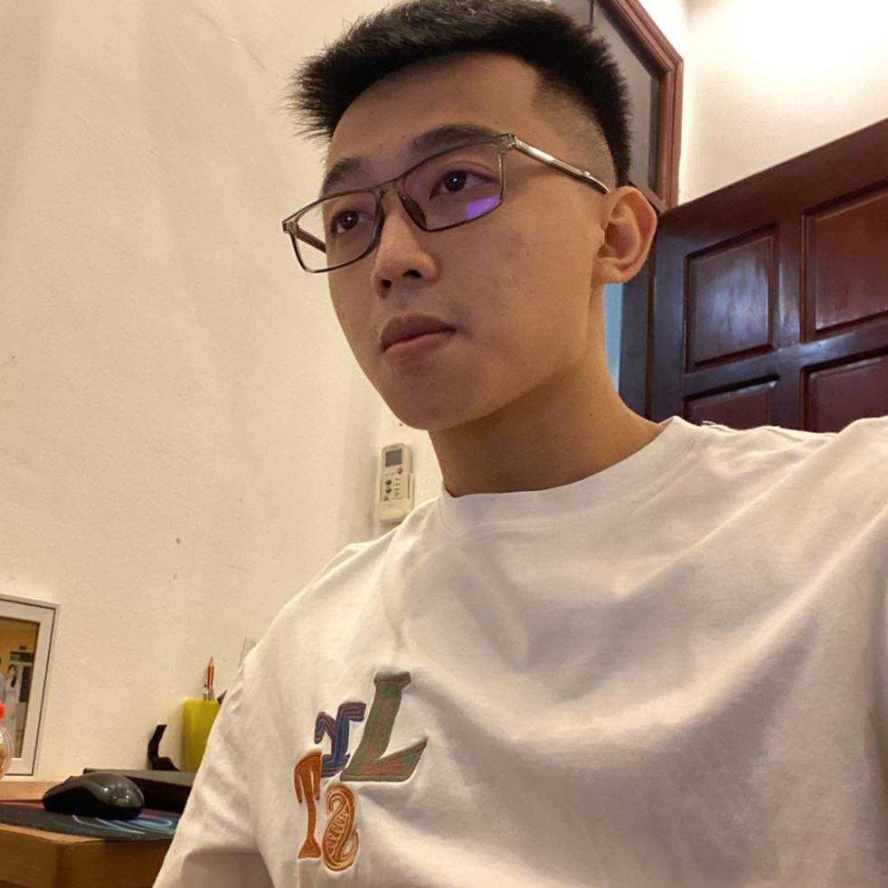

|
Tuan Tran (Tran Anh Tuan)
|

|
Hi, I'm Tuan!
I'm a B.S student @
HUST .
|
About Me
B.S Student – Hanoi Univeristy of Science and Technology.
Contact: “tuan.ta181295@sis.hust.edu.vn “ | “trananhtuan23012000@gmail.com ”. Or
check my LinkedIn, Facebook, GitHub.
Research interests: Optimization/ DeepLearning.
You can find my long resume here.
Publications
|
Improving Pareto Front Learning via Multi-Sample Hypernetworks
Hoang Phi Long, Le Duy Dung, Tran Anh Tuan, Tran Ngoc Thang
In AAAI Conference on Artificial Intelligence (AAAI), 2023
[Code, Paper]
|
|
A stochastic logistic sigmoid regression using convex programming and clustering
Tran Anh Tuan, Tran Ngoc Thang, Vu Viet Hoang, Do Manh Dung, Nguyen Thi Ngoc Anh
In Conference on Technologies and Applications of Artificial Intelligence (TAAI), 2021
[Paper]
|
|
Multi Deep Learning Model for Building Footprint Extraction from High Resolution Remote Sensing Image
Ho Trong Anh, Tran Anh Tuan, Hoang Phi Long, Le Hai Ha, Tran Ngoc Thang
In Conference on Intelligent Systems & Networks (ICISN), 2022
[Paper]
|
Honors and Awards
|
{kind=link}